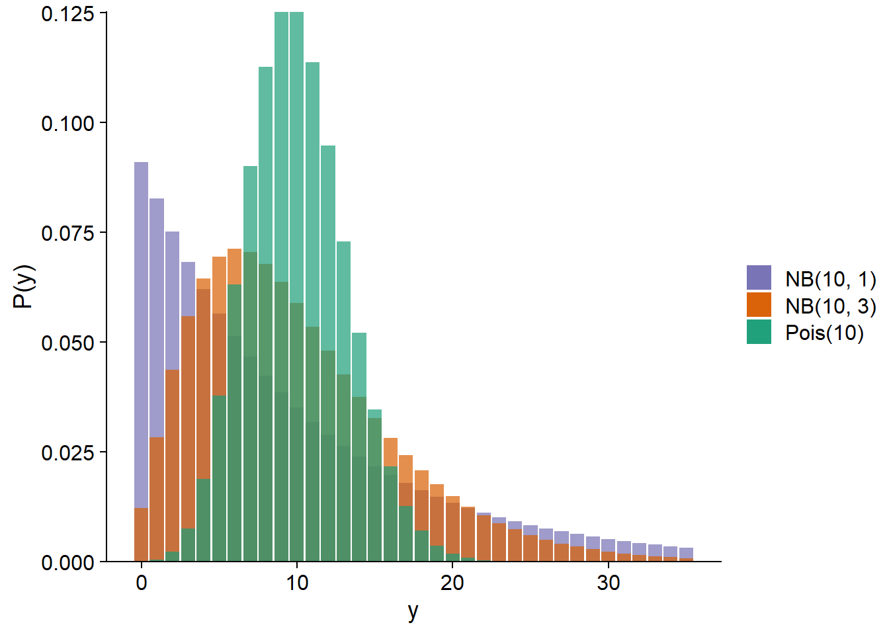
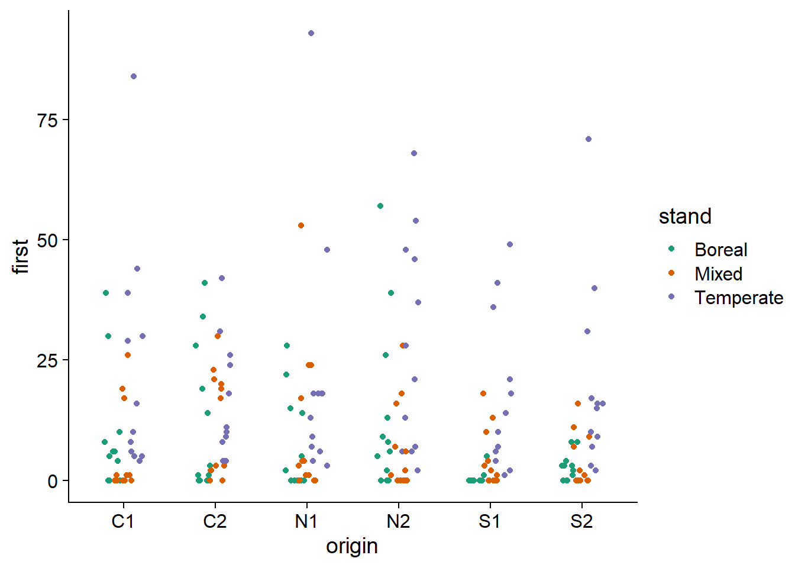
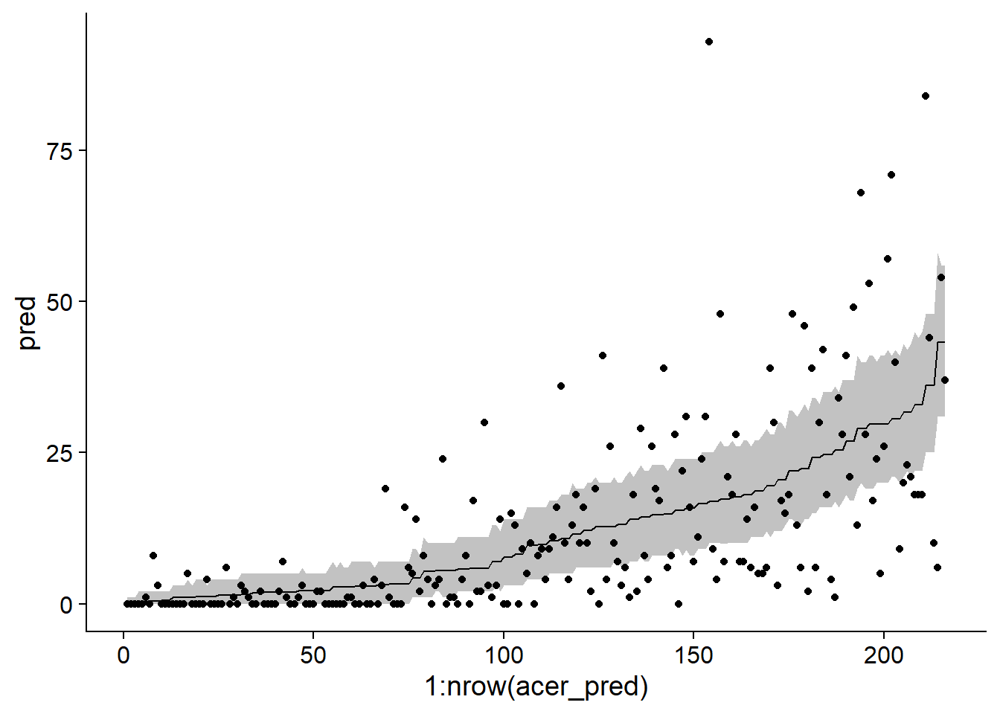
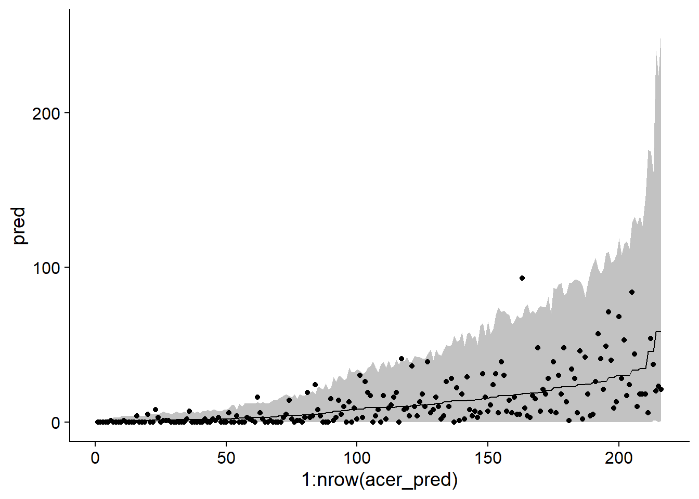
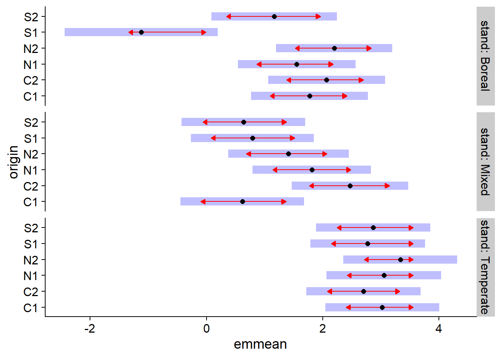
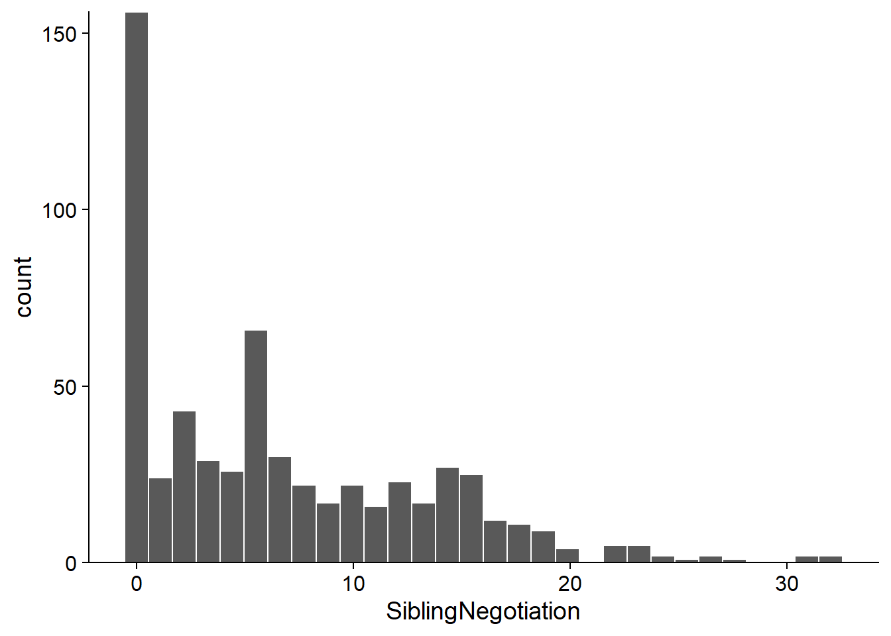
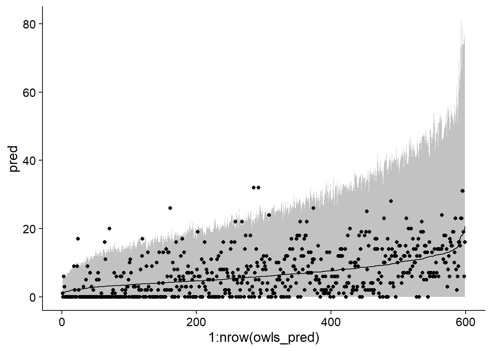
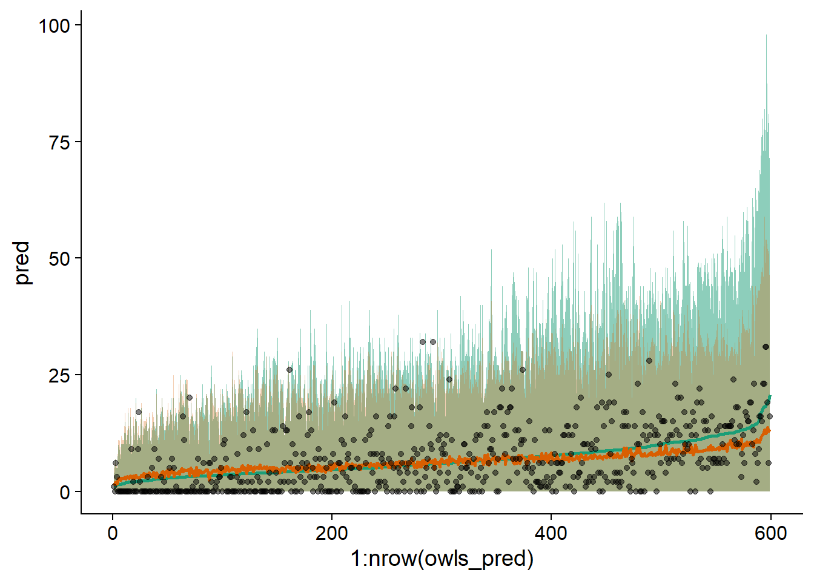

Generalized linear mixed models 2
Contents
In this class, we will present different models for processing count data where the Poisson distribution does not exactly apply. In particular:
overdispersed data (negative binomial model);
data expressed as rates (counts per unit of time, space, etc.); and
zero-inflated data.
Negative binomial model
Negative binomial distribution
Like the Poisson distribution, the negative binomial distribution makes it possible to represent count data, i.e. integers \(\ge 0\).
Historically, the name “negative binomial” comes from the fact that this distribution represents the number of failures before obtaining a certain number of successes in a binomial experiment. However, in order to use this distribution in a regression model, a more general definition of the distribution is more appropriate.
According to this definition, if we have a process where each observation follows a Poisson distribution with its own mean \(\lambda\) and these \(\lambda\) values vary randomly from one observation to another according to a gamma distribution, then the distribution obtained corresponds to the negative binomial distribution. In practice, we will not model this variation at two levels, but this view of the binomial distribution explains why it represents well the overdispersion of count data.
The negative binomial distribution noted \(\text{NB}(\mu, \theta)\) depends on the parameters \(\mu\) (mean) and \(\theta\). The variance of the distribution is \(\mu + \mu^2 / \theta\), so a smaller \(\theta\) means a larger variance. Below, we compare the Poisson distribution with \(\lambda\) = 10 to negative binomial distributions with \(\mu\) = 10 and \(\theta\) = 1 or 3.

In the context of a regression model (GLM or GLMM), the mean \(\mu\) is generally related to the linear predictor by a logarithmic link, as in Poisson regression.
\[y \sim \text{NB}(\mu, \theta)\]
\[\log \mu = \beta_0 + \sum_{i=1}^m \beta_i x_i\]
Technically, this model is a GLM only if \(\theta\) is known. If we wish to estimate \(\theta\) from the data, we can proceed by iteration. Starting from an initial value chosen for \(\theta\), we fit the other parameters as for a GLM, then we use the residual variance to estimate \(\theta\), and repeat these steps until the estimates converge to stable values. In R, this method is implemented by the functions glm.nb of the MASS package (for models without random effects) and glmer.nb of the lme4 package (for GLMM).
Example: Local adaptation of maple
The acer_transplant.csv dataset contains data from an experiment to compare the germination of sugar maple seeds from different geographic origins in three forest types (boreal, mixed and temperate).
Solarik, K.A.,Messier, C., Ouimet, R., Bergeron, Y., Gravel, D. (2018). Local adaptation of trees at the range margins impact range shifts in the face of climate change. Global Ecology and Biogeography, DOI:10.1111/geb.12829.
acer <- read.csv("../donnees/acer_transplant.csv")
str(acer)## 'data.frame': 216 obs. of 6 variables:
## $ stand : chr "Boreal" "Boreal" "Boreal" "Boreal" ...
## $ site : chr "Ashuapmushuan" "Ashuapmushuan" "Ashuapmushuan" "Ashuapmushuan" ...
## $ origin : chr "N1" "S1" "C2" "S2" ...
## $ first : num 28 0 1 0 6 ...
## $ second : num 18 0 0 0 2 ...
## $ survival: num 0.643 0 0 0 0.333 ...The treatments are therefore origin (original population) and stand (forest type). Four sites were studied in each forest type with 3 replicates per site, so we expect a random effect of site. Finally, the response of interest is first, which is the number of seedlings counted the first year after the plots were seeded.
By making a histogram of the number of seedlings in all treatments combined, it appears that the dataset contains several values close to 0 as well as some very large values (> 50). This could suggest over-dispersion, but it is important to assess this from the model residuals, not the raw response.
ggplot(acer, aes(x = first)) +
geom_histogram(color = "white") +
scale_y_continuous(expand = c(0, 0))
Here are the values of the response for each combination of an origin and a forest type. There still appears to be overdispersion.
ggplot(data = acer, aes(x = origin, y = first, color = stand)) +
geom_point(position = position_jitterdodge(jitter.width = 0.2, dodge.width = 0.4)) +
scale_color_brewer(palette = "Dark2")
Note the use of position_jitterdodge in ggplot. The dodge.width part (between 0 and 1) controls the horizontal spacing between dots of different colors, while jitter.width controls the random horizontal movement of the dots of each color, to distinguish repeated values.
Poisson regression
We first estimate the parameters of the Poisson GLMM, including the interaction between the population of origin and forest type, as well as the random effect of the site. We also choose the BOBYQA optimizer because of a convergence problem with the default optimizer.
library(lme4)
acer_p <- glmer(first ~ stand * origin + (1 | site), data = acer, family = poisson,
control = glmerControl(optimizer = "bobyqa"))The \(\chi^2\) test shows an important and statistically significant overdispersion.
chi2 <- sum(residuals(acer_p, "pearson")^2)
chi2 / df.residual(acer_p)## [1] 11.00471 - pchisq(chi2, df = df.residual(acer_p))## [1] 0This overdispersion is also apparent when simulating from the fitted model to produce 95% prediction intervals, which are much too narrow compared to the observed data.
sim_acer_p <- simulate(acer_p, nsim = 1000, re.form = NULL)
acer_pred <- mutate(acer, pred = predict(acer_p, type = "response"),
q025 = apply(sim_acer_p, 1, quantile, probs = 0.025),
q975 = apply(sim_acer_p, 1, quantile, probs = 0.975)) %>%
arrange(pred)
ggplot(acer_pred, aes(x = 1:nrow(acer_pred), y = pred, ymin = q025, ymax = q975)) +
geom_ribbon(alpha = 0.3) +
geom_line() +
geom_point(aes(y = first))
Note: In the code above, we called predict and simulate without providing a newdata dataset. In this case, the predictions are made from the rows of the original dataset. The function arrange(pred) orders the dataset according to the predicted values, which helps in visualization; for this graph, the \(x\)-axis represents only the position of each row in the ordered dataset.
Negative binomial regression
Here is the corresponding negative binomial model with glmer.nb. Note that the code is identical to the Poisson model, except for the family argument, which is not necessary because the glmer.nb function implies a negative binomial distribution.
acer_nb <- glmer.nb(first ~ stand * origin + (1 | site), acer,
control = glmerControl(optimizer = "bobyqa"))In this model, the residuals follow the expected dispersion.
chi2 <- sum(residuals(acer_nb, "pearson")^2)
chi2/df.residual(acer_nb)## [1] 1.1081411-pchisq(chi2, df = df.residual(acer_nb))## [1] 0.1428505We use the same method as above to illustrate the prediction intervals for each observation in the dataset.
sim_acer_nb <- simulate(acer_nb, nsim = 1000, re.form = NULL)
acer_pred <- mutate(acer, pred = predict(acer_nb, type = "response"),
q025 = apply(sim_acer_nb, 1, quantile, probs = 0.025),
q975 = apply(sim_acer_nb, 1, quantile, probs = 0.975)) %>%
arrange(pred)
ggplot(acer_pred, aes(x = 1:nrow(acer_pred), y = pred, ymin = q025, ymax = q975)) +
geom_ribbon(alpha = 0.3) +
geom_line() +
geom_point(aes(y = first))
Knowing that the fit of the model is good, we can now inspect the coefficient estimates. Note that in the second line of the summary, Negative Binomial(0.9232) tells us the estimated \(\theta\) value for this model (0.9232). This is a rather small \(\theta\), so the variance of the counts is large.
summary(acer_nb)## Generalized linear mixed model fit by maximum likelihood (Laplace
## Approximation) [glmerMod]
## Family: Negative Binomial(0.9232) ( log )
## Formula: first ~ stand * origin + (1 | site)
## Data: acer
## Control: glmerControl(optimizer = "bobyqa")
##
## AIC BIC logLik deviance df.resid
## 1370.5 1438.0 -665.2 1330.5 196
##
## Scaled residuals:
## Min 1Q Median 3Q Max
## -0.9296 -0.7008 -0.3281 0.3474 4.7128
##
## Random effects:
## Groups Name Variance Std.Dev.
## site (Intercept) 0.6169 0.7854
## Number of obs: 216, groups: site, 12
##
## Fixed effects:
## Estimate Std. Error z value Pr(>|z|)
## (Intercept) 1.7753 0.5130 3.461 0.000538 ***
## standMixed -1.1572 0.7461 -1.551 0.120921
## standTemperate 1.2487 0.7163 1.743 0.081291 .
## originC2 0.2932 0.4661 0.629 0.529253
## originN1 -0.2226 0.4671 -0.476 0.633740
## originN2 0.4228 0.4594 0.920 0.357337
## originS1 -2.8949 0.6301 -4.594 4.34e-06 ***
## originS2 -0.6121 0.5116 -1.196 0.231533
## standMixed:originC2 1.5574 0.6917 2.252 0.024354 *
## standTemperate:originC2 -0.6146 0.6403 -0.960 0.337133
## standMixed:originN1 1.4179 0.6862 2.066 0.038808 *
## standTemperate:originN1 0.2509 0.6469 0.388 0.698078
## standMixed:originN2 0.3708 0.6887 0.538 0.590266
## standTemperate:originN2 -0.1115 0.6334 -0.176 0.860280
## standMixed:originS1 3.0669 0.8132 3.771 0.000162 ***
## standTemperate:originS1 2.6444 0.7677 3.444 0.000572 ***
## standMixed:originS2 0.6308 0.7253 0.870 0.384462
## standTemperate:originS2 0.4570 0.6736 0.678 0.497458
## ---
## Signif. codes: 0 '***' 0.001 '**' 0.01 '*' 0.05 '.' 0.1 ' ' 1##
## Correlation matrix not shown by default, as p = 18 > 12.
## Use print(x, correlation=TRUE) or
## vcov(x) if you need itSince we have the interaction of two categorical predictors, the coefficients give us the differences between the values of the linear predictor (thus the log of the mean number of seedlings) between each combination of treatments and the reference values (here, originC1 and standBoreal). In order to quickly compare the different treatments, the emmeans package can be useful. This package performs multiple comparisons, similar to the Tukey test seen for the ANOVA, but is applicable to different types of models, including GLMM.
In the example below, emmeans(acer_nb, ~ origin | stand) tells the function to compare the mean effects of different origins within each forest type. These comparisons are displayed with the plot function.
library(emmeans)
plot(emmeans(acer_nb, ~ origin | stand), comparisons = TRUE)
In this graph, the horizontal emmean axis shows the average effect of each treatment on the linear predictor scale (i.e. the logarithm of the average number of seedlings). The shaded areas show the 95% confidence interval for each mean, while the red arrows (obtained by specifying comparisons = TRUE in plot) indicate which effects are significantly different. The difference between two treatments is not significant if the arrows overlap.
Note: Specifying ~ origin | stand in emmeans performs a correction (of the Tukey type) for multiple comparisons between origins for each forest type, but you cannot compare means between forest types. We could specify ~ origin * stand to make comparisons between all combinations of the two variables, but in this case the arrows would be longer because of the number of additional comparisons.
Models for rates
Suppose that we want to analyze data on the abundance (number of individuals) of a species on different plots. However, plot sizes differ, so it is expected that at the same population density, abundance will increase in proportion to plot size.
In this case, the population density could be modeled directly (individuals / m\(^2\)). However, this method has several drawbacks. We lose count information, which prevents us from using the Poisson or negative binomial distribution. In addition, this method would consider the presence of 3 individuals in 1 m\(^2\) as equivalent to the presence of 12 individuals in 4 m\(^2\), even though these two results are not statistically equivalent due to a different sample size.
A better solution is to adapt the Poisson regression model.
For example, suppose that the number of individuals \(y\) in a plot follows a Poisson distribution of mean \(\lambda = \rho A\), where \(\rho\) is the population density and \(A\) is the plot area. In this case, if we want to model \(\log \rho\) according to the \(x_i\) predictors:
\[\log \rho = \beta_0 + \beta_1 x_1 + ...\]
We can rewrite \(\rho\) as the ratio \(\lambda / A\) and use the properties of logarithms:
\[\log \rho = \log(\lambda / A) = \log \lambda - \log A \]
\[\log \lambda = \log A + \beta_0 + \beta_1 x_1 + ...\]
Thus, the model can be represented as a Poisson regression, as long as we add a \(\log A\) term, called offset, to the linear predictor. This term is different from the other predictors, because we do not estimate a \(\beta\) coefficient. In a sense, it is a predictor with a coefficient set to 1, to express the assumption that the mean count is proportional to \(A\).
Example
The Owls dataset of the glmmTMB package presents the results of a study on the behaviour of barn owls nestlings.
Roulin et Bersier (2007) “Nestling barn owls beg more intensely in the presence of their mother than in the presence of their father.” Animal Behaviour 74: 1099-1110.
library(glmmTMB)
data(Owls)
str(Owls)## 'data.frame': 599 obs. of 8 variables:
## $ Nest : Factor w/ 27 levels "AutavauxTV","Bochet",..: 1 1 1 1 1 1 1 1 1 1 ...
## $ FoodTreatment : Factor w/ 2 levels "Deprived","Satiated": 1 2 1 1 1 1 1 2 1 2 ...
## $ SexParent : Factor w/ 2 levels "Female","Male": 2 2 2 2 2 2 2 1 2 1 ...
## $ ArrivalTime : num 22.2 22.4 22.5 22.6 22.6 ...
## $ SiblingNegotiation: int 4 0 2 2 2 2 18 4 18 0 ...
## $ BroodSize : int 5 5 5 5 5 5 5 5 5 5 ...
## $ NegPerChick : num 0.8 0 0.4 0.4 0.4 0.4 3.6 0.8 3.6 0 ...
## $ logBroodSize : num 1.61 1.61 1.61 1.61 1.61 ...The response variable, SiblingNegotiation, represents the number of cries made by nestlings waiting for food in a given nest, as a function of their level of hunger (FoodTreatment), the sex of the parent out foraging (SexParent), and the arrival time of that parent (ArrivalTime). Because repeated measurements were taken on each nest, Nest is a random effect. Finally, since the number of nestlings (BroodSize) varies in each nest, this variable will be used as offset to model the number of calls per nestling.
Here is the distribution of the response variable. Note that more than 25% of the observations are 0.
ggplot(Owls, aes(x = SiblingNegotiation)) +
geom_histogram(color = "white") +
scale_y_continuous(expand = c(0, 0))
We start by fitting a Poisson GLMM with an offset:
owls_p <- glmer(SiblingNegotiation ~ FoodTreatment * SexParent + ArrivalTime +
(1|Nest) + offset(logBroodSize), data = Owls, family = poisson)
chi2 <- sum(residuals(owls_p, type = "pearson")^2)
chi2 / df.residual(owls_p)## [1] 5.4473611 - pchisq(chi2, df = df.residual(owls_p))## [1] 0Since the \(\chi^2\) test shows important overdispersion, we then try a negative binomial model.
owls_nb <- glmer.nb(SiblingNegotiation ~ FoodTreatment * SexParent + ArrivalTime +
(1|Nest) + offset(logBroodSize), data = Owls)
chi2 <- sum(residuals(owls_nb, type = "pearson")^2)
chi2 / df.residual(owls_nb)## [1] 0.8518262In this case, the coefficient of dispersion is slightly less than 1. Looking at the model summary, we note that FoodTreatment and ArrivalTime have significant effects. Note the estimate \(\theta = 0.8847\) in the second row.
summary(owls_nb)## Generalized linear mixed model fit by maximum likelihood (Laplace
## Approximation) [glmerMod]
## Family: Negative Binomial(0.8847) ( log )
## Formula: SiblingNegotiation ~ FoodTreatment * SexParent + ArrivalTime +
## (1 | Nest) + offset(logBroodSize)
## Data: Owls
##
## AIC BIC logLik deviance df.resid
## 3477.5 3508.3 -1731.8 3463.5 592
##
## Scaled residuals:
## Min 1Q Median 3Q Max
## -0.9069 -0.7794 -0.2060 0.4465 5.5441
##
## Random effects:
## Groups Name Variance Std.Dev.
## Nest (Intercept) 0.1095 0.3309
## Number of obs: 599, groups: Nest, 27
##
## Fixed effects:
## Estimate Std. Error z value Pr(>|z|)
## (Intercept) 3.50710 0.63229 5.547 2.91e-08 ***
## FoodTreatmentSatiated -0.76653 0.16109 -4.758 1.95e-06 ***
## SexParentMale -0.01044 0.14213 -0.073 0.941
## ArrivalTime -0.11515 0.02513 -4.583 4.58e-06 ***
## FoodTreatmentSatiated:SexParentMale 0.17349 0.20099 0.863 0.388
## ---
## Signif. codes: 0 '***' 0.001 '**' 0.01 '*' 0.05 '.' 0.1 ' ' 1
##
## Correlation of Fixed Effects:
## (Intr) FdTrtS SxPrnM ArrvlT
## FdTrtmntStt -0.135
## SexParentMl -0.120 0.550
## ArrivalTime -0.979 0.011 -0.021
## FdTrtmS:SPM 0.109 -0.743 -0.668 -0.017Here are the 95% prediction intervals for that model:
sim_owls_nb <- simulate(owls_nb, nsim = 1000, re.form = NULL, newdata = Owls)
owls_pred <- mutate(Owls, pred = predict(owls_nb, type = "response"),
q025 = apply(sim_owls_nb, 1, quantile, probs = 0.025),
q975 = apply(sim_owls_nb, 1, quantile, probs = 0.975)) %>%
arrange(pred)
ggplot(owls_pred, aes(x = 1:nrow(owls_pred), y = pred, ymin = q025, ymax = q975)) +
geom_ribbon(alpha = 0.3) +
geom_line() +
geom_point(aes(y = SiblingNegotiation))
Although the interval contains most of the data, note that it appears to be too narrow on the left side of the graph and too wide on the right (when the mean is high).
Now let’s check whether the negative binomial model can reproduce the number of zeros observed in the dataset. The code below calculates for each simulation (each column of sim_owls_nb) the number of zeros present (sum(x == 0) counts 1 each time the expression x == 0 is true). We predict a number of zeros between 90 and 125 for 95% of the model realizations.
nb_zeros <- apply(sim_owls_nb, 2, function(x) sum(x == 0))
c(quantile(nb_zeros, probs = 0.025), quantile(nb_zeros, probs = 0.975))## 2.5% 97.5%
## 88 125In comparison, the data contain 156 zeros.
sum(Owls$SiblingNegotiation == 0)## [1] 156Zero-inflated models
The previous example shows that an excess of zeros poses a different problem than overdispersion. Overdispersion produces more low and high counts compared to the expected distribution. In the presence of too many zeros, if these extra zeros were removed, we would retrieve the assumed distribution.
To model a response \(y\) with an excess of zeros, a two-part model is created:
with a probability of \(p_0\), we have a “structural zero”, i.e. \(y = 0\) for sure;
with the remaining probability \((1 - p_0)\), \(y\) follows a negative Poisson or binomial distribution; of course, this distribution can also occasionally produce zeros.
The resulting model is called zero-inflated Poisson or zero-inflated negative binomial, depending on the distribution used for the second part.
For example, a species may be completely absent from a site, which would be a structural zero (we would get a zero for each observation). If present, the number of individuals observed on a given plot varies according to a Poisson distribution, which can also produce zeros.
In the zero-inflated model, the second component (counting model) generally follows a Poisson or negative binomial distribution with a log link, for example \(\log \lambda = \beta_0 + \beta_1 x_1 + ...\) (Poisson)
As for the probability of obtaining a structural zero, \(p_0\), it is modelled by a logit link, as in a logistic regression: \(\text{logit}(p_0) = \gamma_0 + \gamma_1 z_1 + ...\).
We chose different letters to emphasize that the predictors appearing in the model for \(\lambda\) and for \(p_0\) are not necessarily the same. In particular, we can estimate a constant \(p_0\), independent of the predictors; in this case, only the intercept would appear in the model.
Exemple
From the Owls dataset seen in the previous section, we estimate again a negative binomial GLMM, this time from the glmmTMB function of the glmmTMB package. This function allows us to fit some models not included in lme4, including zero-inflated models. Note that family = nbinom2 corresponds to the negative binomial distribution as seen previously.
owls_nb <- glmmTMB(SiblingNegotiation ~ FoodTreatment * SexParent + ArrivalTime +
(1|Nest) + offset(logBroodSize), family = nbinom2, data=Owls)Here is now a zero-inflated version of this model. The model for \(p_0\) is given by the ziformula argument of glmmTMB. In our example, ziformula = ~1 indicates that we only estimate the intercept, so \(p_0\) is constant.
owls_zinb <- glmmTMB(SiblingNegotiation ~ FoodTreatment * SexParent + ArrivalTime +
(1|Nest)+offset(logBroodSize),
family = nbinom2, ziformula = ~1, data=Owls)
summary(owls_zinb)## Family: nbinom2 ( log )
## Formula:
## SiblingNegotiation ~ FoodTreatment * SexParent + ArrivalTime +
## (1 | Nest) + offset(logBroodSize)
## Zero inflation: ~1
## Data: Owls
##
## AIC BIC logLik deviance df.resid
## 3416.4 3451.5 -1700.2 3400.4 591
##
## Random effects:
##
## Conditional model:
## Groups Name Variance Std.Dev.
## Nest (Intercept) 0.06092 0.2468
## Number of obs: 599, groups: Nest, 27
##
## Overdispersion parameter for nbinom2 family (): 2.31
##
## Conditional model:
## Estimate Std. Error z value Pr(>|z|)
## (Intercept) 2.87588 0.49394 5.822 5.8e-09 ***
## FoodTreatmentSatiated -0.40500 0.13480 -3.004 0.00266 **
## SexParentMale -0.07360 0.10255 -0.718 0.47290
## ArrivalTime -0.08294 0.01980 -4.189 2.8e-05 ***
## FoodTreatmentSatiated:SexParentMale 0.15878 0.16235 0.978 0.32807
## ---
## Signif. codes: 0 '***' 0.001 '**' 0.01 '*' 0.05 '.' 0.1 ' ' 1
##
## Zero-inflation model:
## Estimate Std. Error z value Pr(>|z|)
## (Intercept) -1.276 0.122 -10.46 <2e-16 ***
## ---
## Signif. codes: 0 '***' 0.001 '**' 0.01 '*' 0.05 '.' 0.1 ' ' 1Note that the \(\theta\) parameter of the negative binomial model is 2.31, compared to 0.89 for the owls_nb model. This is due to the fact that when accounting for zero-inflation separately, there isn’t as much overdispersion.
The results of the \(p_0\) model are given in the last section. The intercept of -1.276 is equivalent to the logit of \(p_0\). The corresponding probability can be obtained with the function plogis.
plogis(-1.276)## [1] 0.2182319We thus have a probability of around 22% of getting a structural zero.
The zero-inflated model is a better fit according to AIC.
AIC(owls_nb)## [1] 3477.534AIC(owls_zinb)## [1] 3416.383We can also compare both models’ predictions on the same graph.
sim_owls_nb <- simulate(owls_nb, nsim = 1000, re.form = NULL, newdata = Owls)
sim_owls_zi <- simulate(owls_zinb, nsim = 1000, re.form = NULL, newdata = Owls)
owls_pred <- mutate(Owls, pred = predict(owls_nb, type = "response"),
q025 = apply(sim_owls_nb, 1, quantile, probs = 0.025),
q975 = apply(sim_owls_nb, 1, quantile, probs = 0.975),
pred_zi = predict(owls_zinb, type = "response"),
q025_zi = apply(sim_owls_zi, 1, quantile, probs = 0.025),
q975_zi = apply(sim_owls_zi, 1, quantile, probs = 0.975)) %>%
arrange(pred)
ggplot(owls_pred, aes(x = 1:nrow(owls_pred), y = pred, ymin = q025, ymax = q975)) +
geom_ribbon(alpha = 0.5, fill = "#1b9e77") +
geom_ribbon(aes(ymin = q025_zi, ymax = q975_zi), alpha = 0.3, fill = "#d95f02") +
geom_line(color = "#1b9e77", size = 1) +
geom_line(aes(y = pred_zi), color = "#d95f02", size = 1) +
geom_point(aes(y = SiblingNegotiation), alpha = 0.5)
We notice that the zero-inflated model (in orange) better represents the range of the data, with the maximum of the interval higher on the left and lower on the right. Here, the data are ordered on the \(x\)-axis according to the predictions of the model without zero inflation.